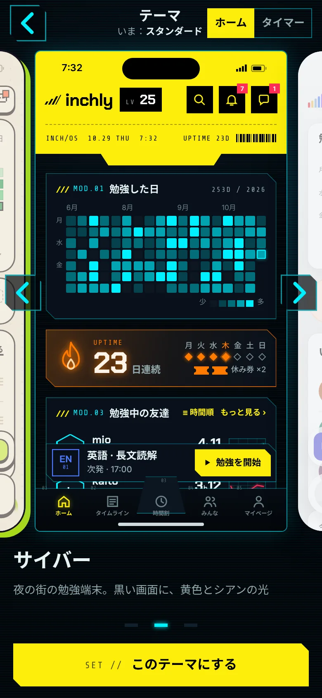
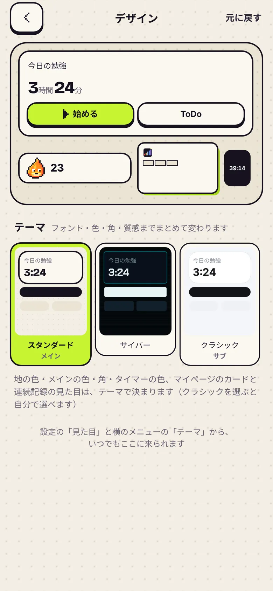
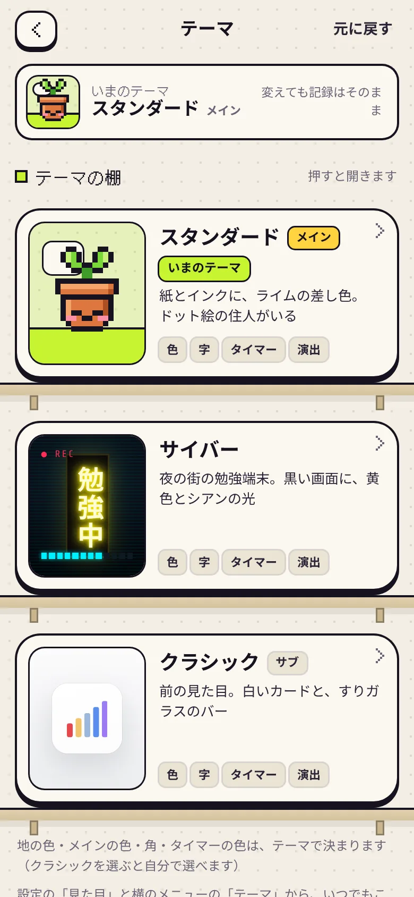
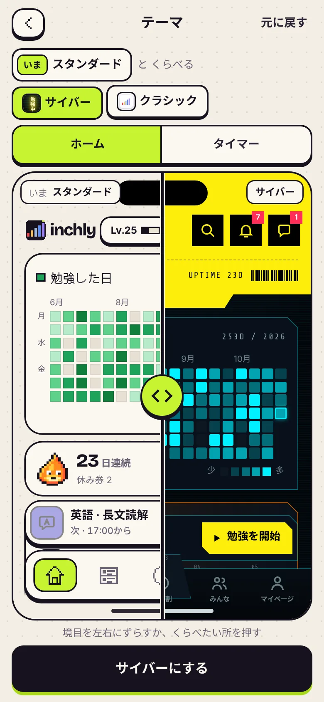

試着室

自分のホームのまま、横にすべらせてテーマを着がえる。地・上の操作・決めるボタンまで、そのテーマの見た目に変わります。
- 指で左右に（矢印・下の点・← → でも）
- 右上でホーム／タイマーを切りかえ
- クラシックは「色・角を選ぶ」から
Inchly · デザインのページ
テーマを選ぶページ（デザインのページ）を、3つの形で作りました。どれも本物に近い見本で、スマホでもパソコンでもさわって試せます。
テーマ変えのページもうちょいこだわりたいな。案出して
オーナーより。この3つが、その答えです
今のページ
上にいまの見た目の小さな見本、その下にスタンダード（メイン）・サイバー・クラシック（サブ）のタイル。押すとすぐ変わります。
写真か「開く」で、その案の見本へ

自分のホームのまま、横にすべらせてテーマを着がえる。地・上の操作・決めるボタンまで、そのテーマの見た目に変わります。

テーマを1枚ずつのカードにして棚に並べる。そのテーマらしい絵と、変わるもの（色・字・タイマー・演出）がひと目でわかります。

いまのテーマと気になるテーマを、同じ画面に重ねてくらべる。まん中の境目を指でずらすと、左がいま、右が選んだテーマ。
まぜるなら：B の棚を入口にして、カードを押すと A の試着室になる（その中で C のように「いま」と並べられる）、という組み合わせもできます。
見本のデータは、サンプルのアカウント（はる）。テーマを決めても保存はしない見本です。